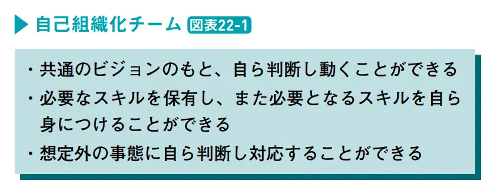

いちばんやさしいアジャイル開発の教本 を読んだ

目次
2024/4からチーム異動してスクラムを実践しているチームに移ったのでアジャイル・スクラムのインプットをしたいと思い、「いちばんやさしいアジャイル開発の教本」を読んだ。
本書を読んで自分なりに勉強になったことをLessonごとに書いていく。（カッコ内のPxxはページを表す）
Lesson6. アジャイル開発とは何か（P28-31）⌗
「継続的に改善することが前提」なので逆にいえば作りたいものが決まっているならばアジャイル開発を採用するメリットは薄いかもしれない。
Lesson7. カイゼン（P32）⌗
世界で通じる日本語、“Kaizen”。このKaizenという言葉は日本においてもカタカナで 「カイゼン」 と表現されており、「改善」という単語とはあえて区別されています。
もともと改善という表現は「誤りや欠陥を正し、よりよいものにする」という意味があります。カイゼンは 「いまあるものをよりよいものにしていく」 という精神に基づいており、より前向きで積極的なものだということがわかります。
「カイゼン」という表記を見たことはあったが、文脈によっては「改善」とは別の単語として使われているというこれは知らなかった。
Lesson14. アジャイル開発の構造（P56）⌗
- マインドセット： アジャイルソフトウェア開発宣言
- マインドセットを実現するための原則： アジャイル宣言の背後にある原則
- 現場での実践： スクラム・XP・FDD・カンバン・モブプロなど
Lesson17. 個人と対話（P66）⌗
アジャイルソフトウェア開発宣言の 「プロセスやツールよりも個人と対話を」 について書いた章。
対話と議論の違いは何でしょうか。ざっくり説明すると、議論は自分自身の目線から主張を展開するものですが、対話は相手の価値観を尊重し、ともに考えていくものです。
プロダクト開発では不確実性が高いため、必ずしも正解がなく、あらゆる角度から課題を見つめることでより良い解決策を探っていくことが重要で、そのための有効な手段として「対話」があると解釈した。
また、対話を繰り返すなかで互いの認識のズレや齟齬を発見し解消していくことで、議論の前提にズレが生まれることが減り、よりスピーディーに問題解決を行うことができるようになりそう。（これはアジャイルに限らないが）
このように個人を尊重し、対話をしながらチームの課題と全員で向き合うことで相互理解が進み、それぞれが異なる立場からの視点を得ることができます。
盲目的にプロセスやツールに従うのではなく、個人との対話をして相互理解を深めることでチームが強くなる。そのようなチームでは信頼関係があり情報共有が活発に行われるため問題が起きても迅速にリカバリーすることができる。
Lesson.18 動くソフトウェア（P68）⌗
アジャイルソフトウェア開発宣言の 「包括的なドキュメントよりも動くソフトウェアを」 について書いた章。
ソフトウェア開発においては課題とその解決方法を仮説として立て、実際にリリースして検証するという流れで開発を進めることが多い。
細かくリリースするのではなく、機能を全て作り込んでからリリースした場合、仮説と解決策の確らしさを検証できるのが遅くなってしまう。
なので、仮説を検証するために最低限必要な機能が備わっているプロダクト（MVP）を提供して仮説の検証を行うことでより素早く検証のループを回すことができる。
また、いくら社内で話し合ったところで実際の顧客の反応がわかるわけではないので、一定仮説を煮詰めたらリリースして実際の反応をみることが重要そう。
Lesson.19 顧客との協調（P70）⌗
アジャイルソフトウェア開発宣言の 「契約交渉よりも顧客との協調を」 について書いた章。
自社開発の場合はこの契約交渉はどのような形となって現れてくるのでしょうか。たとえば、顧客からのフィードバックに対して「それは仕様が悪い」「仕様通りの挙動です」というようにいまのソフトウェアの挙動が正しいことを前提として判断してしまう、といった保守的な行動として現れます。
…(中略)…
ユーザーボイスを尊重しながら、そのままいわれたとおりに開発するのではなく、その声の裏側にある本当に要望を見極めていきましょう。
社内外からのフィードバックをフラットに受け取ってフィードバックの裏側の要求を見極めることでよりよいプロダクトを作っていけそう。
Lesson.20 変化への対応（P72）⌗
アジャイルソフトウェア開発宣言の 「計画に従うことよりも変化への対応を」 について書いた章。
プロダクト開発においては常に最新の情報を基に仮説をアップデートすることが重要なので事前に決めた計画通りに進めることよりも、都度変化に適用することが重要そう。(それはそうという感じだが)
Lesson.22 自己組織化チームとリーダーシップ（P76）⌗
図表22-2が示すように自己組織化チームとはひとことでいうと「自走できるチーム」です。自分たちがなぜここにいるのかを理解し、またお互いの得意分野がわかっているため自分たちで最適なフォーメーションを組みながらビジョンへと向かっていきます。リーダーの意思決定を待つことなく自己修復的に課題を解決していく。それが自己組織化チームの底力です。
 「いちばんやさしいアジャイル開発の教本」P76より引用
チームの振り返りなんかでも、「どうすれば自己組織化チームに近付けるか」という観点で考えてみてもいいかもしれない。
自己組織化チームにおいて情報共有は重要な要素
よく透明性が大事、と聞くけどそれも個々人が自律的に行動するために情報は不可欠だからなんだろうなーと思った。
理想的な自己組織化チームとは？
(中略) 自己組織化し、それぞれのメンバーがリーダーシップを発揮できるようになると、 外からチームを見た際にはもはや誰がリーダーと呼ばれる役割なのかわからなくなるでしょう。
これは自己組織化されたチームの見え方の1つとして良さそうだとおもったので心に留めておきたい。
まとめ⌗
- まずは「自己組織化チーム」を目指していきたい。
- 実際にアジャイルの入門書を1冊読んでみて、とはいえまずはスクラムガイドをしっかり理解した方がよさそうだと思ったので次はスクラムガイドを読み込んでいこうと思う。